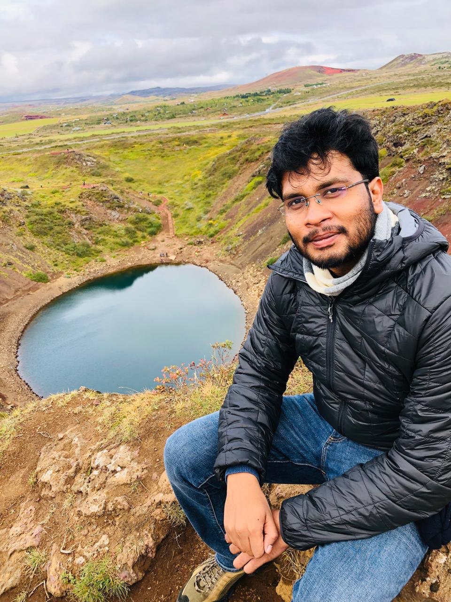
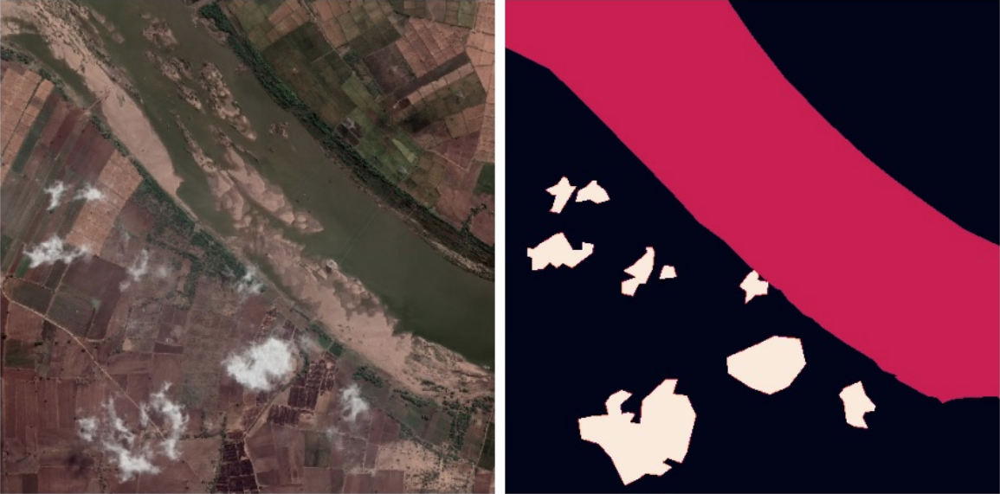
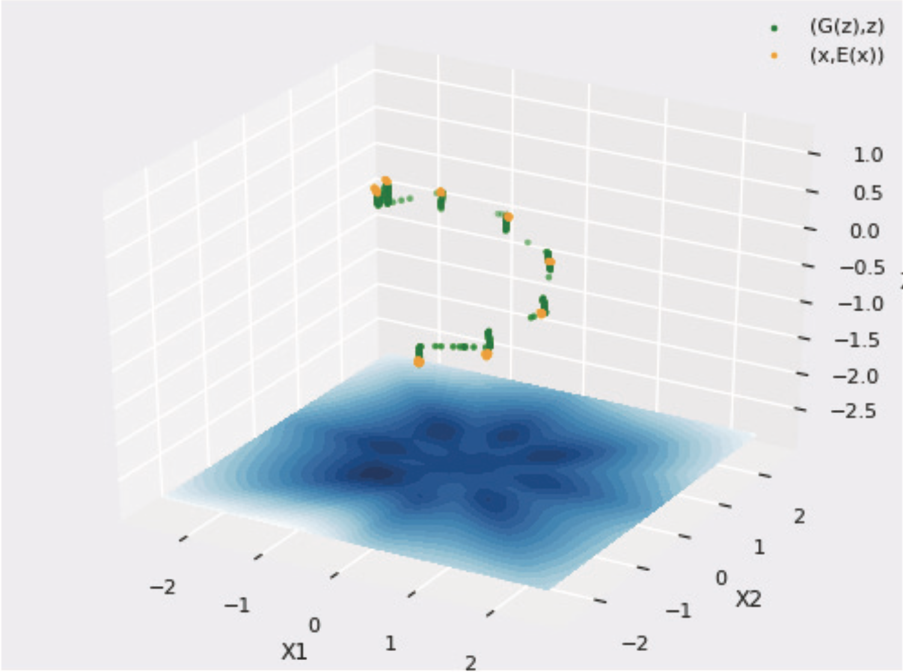
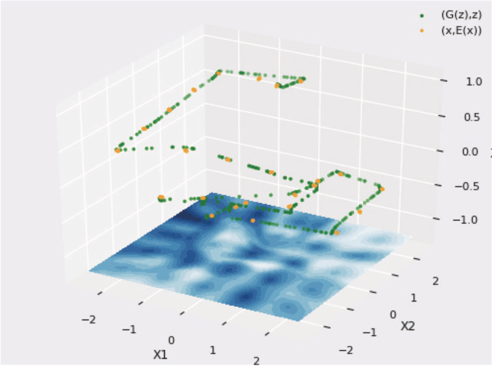

I'm a PhD researcher at the University of Bath, supervised by Dr. Vinay Namboodiri and Dr. Janina Hoffmann. My work is motivated by how biological agents learn: decomposing behavior into reusable skills, planning over long horizons, and adapting with minimal external guidance.
Before the PhD, I spent seven years as a software engineer and applied researcher: shipping mobile applications, conversational AI systems, and computer vision pipelines at Google. I write code at every level of the stack, from CUDA kernels to end-to-end applications. I care about research that works not just in theory, but in systems that ship.
Biological agents decompose behavior into reusable skills across levels of abstraction. I study how artificial agents can do the same like, acquiring skills autonomously, structuring goals temporally, and planning over long horizons through hierarchical decomposition.
Labels are expensive; structure is abundant. I'm interested in methods that learn from data itself: self-, semi-, un-supervised objectives, and intrinsic motivation. Understanding how far agents can get with minimal external guidance.
Learned policies ultimately need to operate in real environments with noisy sensors and physical constraints. I'm drawn to closing the gap between simulated agents and real-world robotic deployment.
"Structures the goal representations temporally, learning fine and coarse grained skills explicitly. A meta-controller interleaves the skills for optimal behavior."

"Quantifying exactly how much Self and Semi-supervised methods using unlabeled satellite imagery can help improve segmentation — and what breaks under geographic domain shift."


"Directly addresses mode collapse in Generative Adversarial Networks using a novel higher-order gradient penalty that ensures comprehensive data distribution coverage with a theoretical guarantee."
"Replacing single next-token prediction with a set of learned options gives LLMs controllable diversity and makes RL alignment structurally simple."
End-to-end IoT framework built from hardware up — custom ESP32 device communicating over MQTT with a local server. Designed for modular device integration across a home network.
Autonomous navigation of a ROSBot through obstacle fields using local laser sensing.
Real-time fused CUDA kernel for Model Predictive Path Integral (MPPI) control for robotic arms allowing for sub-millisecond latency and sub-millimeter final error.
Library of a collection of misc custom kernels (exported for JAX and PyTorch) and an extensive benchmarking suite.
Autonomous skill acquisition and long-horizon planning for hierarchical RL agents, and self exploration. Supervised by Dr. Vinay Namboodiri and Dr. Janina Hoffmann. Published at NeurIPS workshops (2023, 2025) with one paper under review.
Computer vision for satellite imagery. Developed a semi-supervised pipeline achieving baseline performance with 99% less labeled data. Deployed models to Google's EarthStacker landscape mapping system. Led codebase development for a 7-person research team across multi-GPU/TPU clusters.
Conversational AI for financial services — machine comprehension, abstractive summarization, and multi-turn dialogue. Ranked 10th worldwide on Stanford SQuAD v1.1 and 14th on v2.0. Co-authored two patents on conversational dialogue systems.
Research on generative adversarial networks with Dr. Vinay Namboodiri. Work on addressing mode collapse resulted in an oral presentation at AAAI 2018. Awarded Google Travel & Conference Grant.
Research on generative adversarial networks with Dr. Vinay Namboodiri. Work on addressing mode collapse resulted in an oral presentation at AAAI 2018. Awarded Google Travel & Conference Grant.